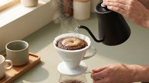

V60, nitelikli kahve dünyasının (3. nesil kahvecilik) en popüler ve en saygın manuel demleme yöntemlerinden biridir. Adını, koni şeklindeki tasarımının 60 derecelik bir açıya ($\theta = 60^\circ$) sahip olmasından alır. Japon firması Hario tarafından geliştirilmiştir.
V60'ın içinin spiral hatlara sahip olması, havanın dışarı çıkmasını kolaylaştırır ve kahve yatağının merkezine doğru suyun mükemmel bir akış açısıyla süzülmesini sağlar. Kağıt filtre kullanılarak demlendiği için kahvenin içindeki tortuları ve yağları süzer; sonuç olarak ortaya berrak, hafif gövdeli, aromaları ve asiditesi çok net seçilebilen bir fincan çıkar.
V60, kahvenin karakterini en saf haliyle ortaya çıkardığı için hataları pek affetmez. Kusursuz bir sonuç için şu detaylara dikkat etmelisiniz:
Kahve çekirdekleri ne çok ince (Türk kahvesi/espresso gibi) ne de çok kalın (French press gibi) olmalıdır. Orta boyutta, deniz tuzu veya sofra tuzu kıvamında öğütülmüş olmalıdır.
Kaynar su ($100^\circ\text{C}$) kahveyi yakar ve acılaştırır. Suyunuz kaynadıktan sonra altını kapatıp 1 dakika kadar dinlendirin ($92^\circ\text{C} - 94^\circ\text{C}$ arası idealdir).
Demlemeye başlamadan önce kağıt filtreyi dripper'a yerleştirip üzerine biraz sıcak su gezdirin ve o suyu dökün. Bu, fincanınıza "kağıt tadı" geçmesini engeller ve ekipmanı ısıtır.
Standart ve dengeli bir kahve için ideal oran 1 gram kahveye 16 ml su ($1:16$) kullanmaktır.
15 gram kahve için toplam 15 x 16 =240 ml su kullanacağız.
Evde bir hassas teraziniz ve kuğu boyunlu (gooseneck) kettle'ınız varsa işiniz çok kolaylaşır. Ancak yoksa da normal bir demlikle suyu yavaşça dökerek bu tarifi uygulayabilirsiniz.
Gerçek bir Lungo, yüksek basınçlı bir espresso makinesi veya kapsül makinesi (Nespresso vb.) gerektirir. Ancak evde bu makineler yoksa, Lungo'nun o karakteristik yüksek kafeinli, buruk ve uzun içimli yapısını taklit edebileceğimiz en pratik yöntem Moka Pot veya filtre kahve mantığıdır.
2.Ön Demleme (Blooming):30 sn.Kahvenin üzerine sadece kuru yer kalmayacak kadar (yaklaşık 40-50 ml) sıcak su dökün ve 30 saniye bekleyin. Kahvenin kabardığını ve baloncuklar çıkardığını göreceksiniz. Bu adım, kahvenin içindeki sıkışmış karbondioksit gazını salmasını sağlar ve aromaları serbest bırakır.
3.Ana Demleme (Dairesel Döküş):1.5 dk.Kalan suyu, merkezden dışarıya doğru spiral (dairesel) hareketlerle, kahve yatağını yıkmadan yavaşça dökün. Suyu direkt kağıt filtreye değil, her zaman kahvenin üzerine dökmeye özen gösterin. Toplam su miktarı 240 ml'ye ulaşınca döküşü bitirin.
4.Süzülme ve Servis:1 dk.V60'ı hafifçe kendi etrafında sallayarak (swirl) kahve yatağının düz bir şekilde dibe çökmesini sağlayın. Su tamamen süzüldüğünde filtrenizi çöpe atın. Toplam demleme süreniz 2.5 ila 3 dakika arasında sürmüş olmalıdır.
Küçük bir ipucu: Eğer kahveniz çok ekşi olduysa, su kahvenin içinden çok hızlı akıp gitmiş demektir (kahveyi bir sonraki sefere biraz daha ince öğütün). Eğer kahveniz aşırı acı olduysa, su çok yavaş süzülmüş ve kahveyi fazla pişirmiştir (bir sonraki sefere kahveyi biraz daha kalın öğütün).